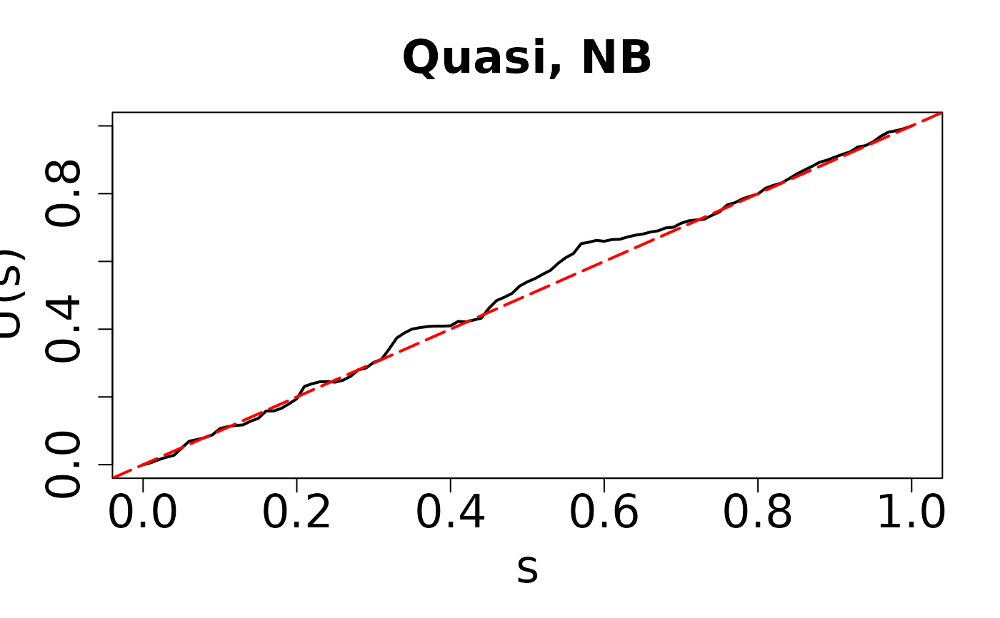
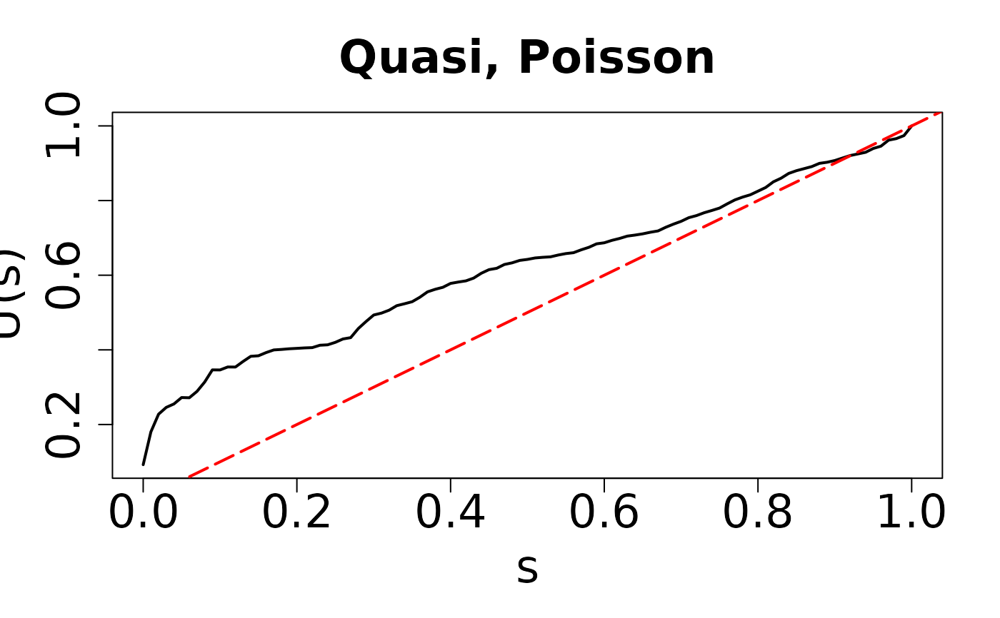
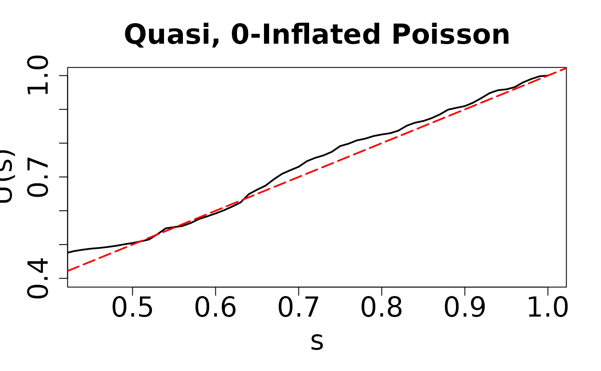

Draw the QQ-plot for regression models with discrete outcomes using the quasi-empirical residual distribution functions.
Specifically, the model assumption of GLMs with binary, ordinal, Poisson, negative binomial,
zero-inlated Poisson, and zero-inflated negative binomial outcomes can be applicable to resid_quasi().
Details
The quasi-empirical residual distribution function is defined as follows: $$\hat{U}(s; \beta) = \sum_{i=1}^{n} W_{n}(s;\mathbf{X}_{i},\beta) 1[F(Y_{i}| X_{i}) < H(s;X_{i})]$$ where $$W_n(s; \mathbf{X}_i, \beta) = \frac{K[(H(s; \mathbf{X}_i)-s)/ \epsilon_n]}{\sum_{j=1}^{n} K[(H(s; \mathbf{X}_j)-s)/ \epsilon_n]}$$ and \(K\) is a bounded, symmetric, and Lipschitz continuous kernel.
References
Lu Yang (2021). Assessment of Regression Models with Discrete Outcomes Using Quasi-Empirical Residual Distribution Functions, Journal of Computational and Graphical Statistics, 30(4), 1019-1035.
Examples
## Negative Binomial example
library(MASS)
# Covariates
n <- 500
x1 <- rnorm(n)
x2 <- rbinom(n, 1, 0.7)
### Parameters
beta0 <- -2
beta1 <- 2
beta2 <- 1
size1 <- 2
lambda1 <- exp(beta0 + beta1 * x1 + beta2 * x2)
# generate outcomes
y <- rnbinom(n, mu = lambda1, size = size1)
# True model
model1 <- glm.nb(y ~ x1 + x2)
resid.nb1 <- resid_quasi(model1)
#>
Multistart 1 of 1 |
Multistart 1 of 1 |
Multistart 1 of 1 |
Multistart 1 of 1 /
Multistart 1 of 1 |
Multistart 1 of 1 |

# Overdispersion
model2 <- glm(y ~ x1 + x2, family = poisson(link = "log"))
resid.nb2 <- resid_quasi(model2)
#>
Multistart 1 of 1 |
Multistart 1 of 1 |
Multistart 1 of 1 |
Multistart 1 of 1 /
Multistart 1 of 1 |
Multistart 1 of 1 |

## Zero inflated Poisson example
library(pscl)
#> Classes and Methods for R originally developed in the
#> Political Science Computational Laboratory
#> Department of Political Science
#> Stanford University (2002-2015),
#> by and under the direction of Simon Jackman.
#> hurdle and zeroinfl functions by Achim Zeileis.
n <- 500
set.seed(1234)
# Covariates
x1 <- rnorm(n)
x2 <- rbinom(n, 1, 0.7)
# Coefficients
beta0 <- -2
beta1 <- 2
beta2 <- 1
beta00 <- -2
beta10 <- 2
# Mean of Poisson part
lambda1 <- exp(beta0 + beta1 * x1 + beta2 * x2)
# Excess zero probability
p0 <- 1 / (1 + exp(-(beta00 + beta10 * x1)))
## simulate outcomes
y0 <- rbinom(n, size = 1, prob = 1 - p0)
y1 <- rpois(n, lambda1)
y <- ifelse(y0 == 0, 0, y1)
## True model
modelzero1 <- zeroinfl(y ~ x1 + x2 | x1, dist = "poisson", link = "logit")
resid.zero1 <- resid_quasi(modelzero1)
#>
Multistart 1 of 1 |
Multistart 1 of 1 |
Multistart 1 of 1 |
Multistart 1 of 1 /
Multistart 1 of 1 |
Multistart 1 of 1 |
